You already shot
the footage.
Roamango cuts it.
Ten years of trips are sitting in your camera roll as raw material — thousands of frames, no edit. Roamango finds the journeys inside them, picks the shots worth keeping, and renders a proper travel film. It comes out as a file. You can post it anywhere.
↘ it exports a beautiful cinematic roam — yours, free to share.
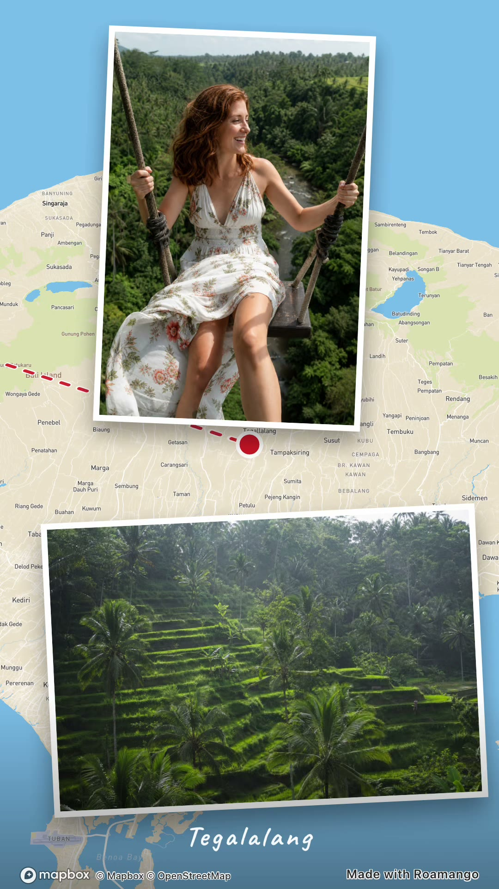
This is what comes out.
The app finding your trips, and the roams it renders from them — several destinations, several map themes, every frame straight off the phone.
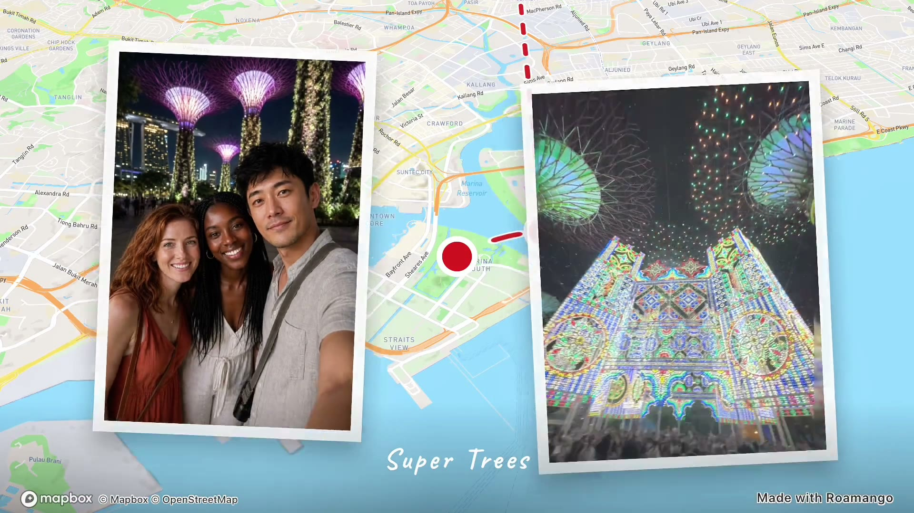
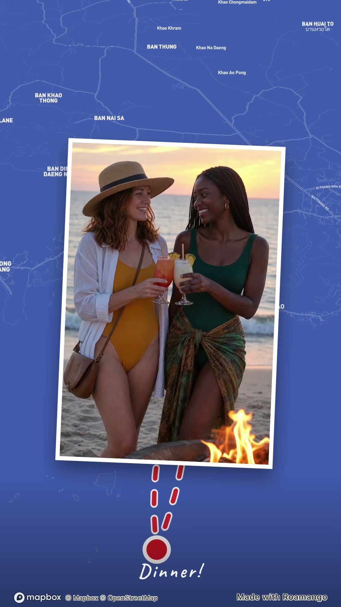
Four things happening in every frame.
A roam isn't a slideshow with a map behind it. The map is the stage, the route is the story, and your photos land on it like prints on a table.
- 01The mapA real Mapbox map of exactly where you were, flying between your stops.
- 02The routeDrawn on as you travel it — solid trail, dotted flight path, wandering road or glowing neon.
- 03The stopsEach destination arrives with a pulse, then your photos bloom over it.
- 04The printsPostcards that drift over the map, or full-screen frames that take the whole thing.
One trip. Completely
different films.
The map is the canvas, so swapping the theme changes everything — palette, mood, the century it looks like it came from. Same South East Asia trip, three ways.
Plus Topographic, Satellite, Neon Globe, Grand Tour Atlas, Risograph Travel Atlas, Desert Mirage, Mango Afterglow and more — with four route-line styles and your own line colour on top.
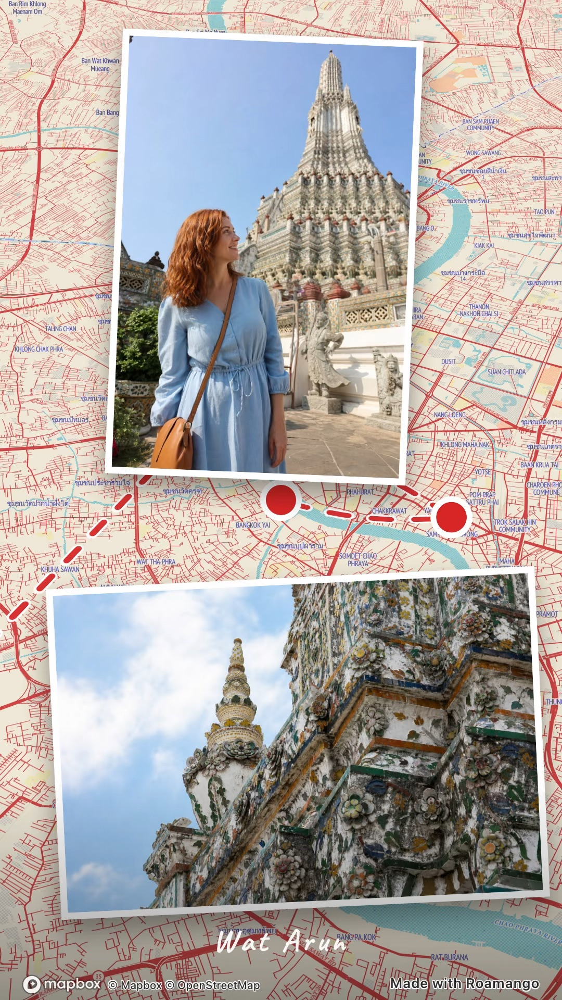
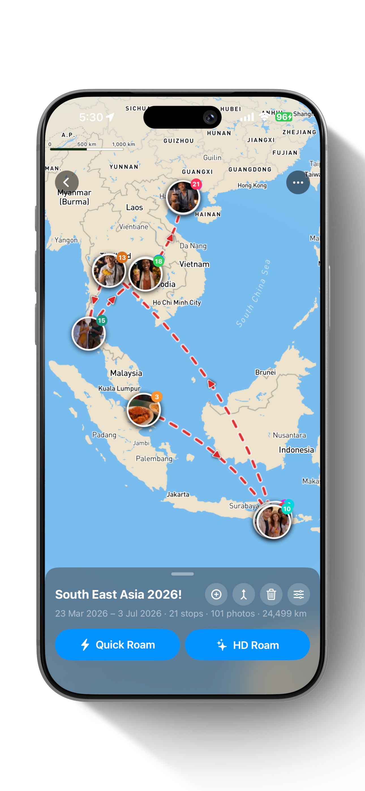
The defaults are good. The controls are better.
Most of the time you'll tap once and it's right. But every trip opens into a full map editor, so when the algorithm puts a stop in the wrong place, you just move it.
- Add, reorder, merge or delete stops
- Merge two trips it split, or split one it merged
- Drop your own video clips in beside the photos
- Quick Roam to preview, HD Roam for the final cut
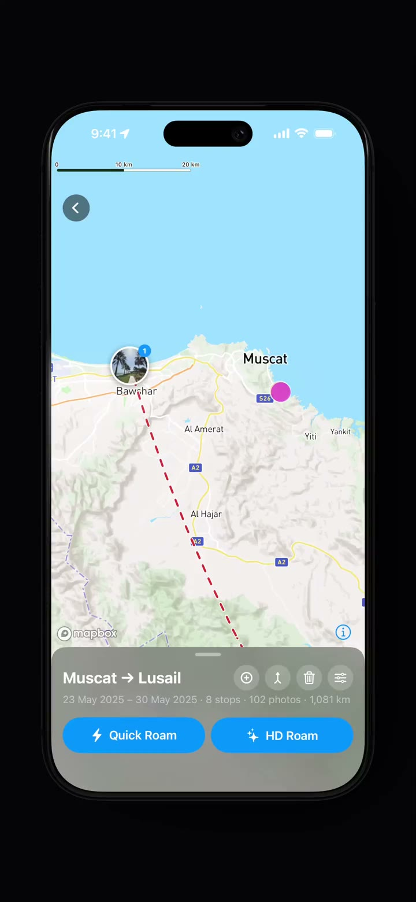
Add a stopSearch, or just tap the map to drop a new place into your route.
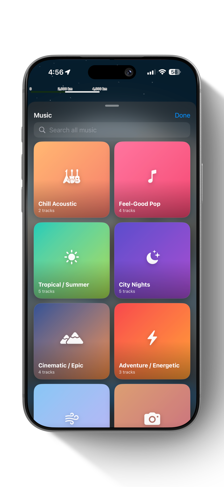
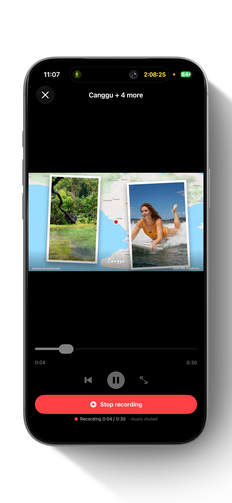
Cleared music — which is why it renders to a file.
Roamango's soundtracks are royalty-free and cleared for you to reuse, so the film that comes out is genuinely yours to post. That's the difference between a video you own and a playback that only exists while an app is open.
Or record your own narration straight over the roam as it plays — the music ducks under your voice automatically.
- Eight moods, from tropical summer to city nights
- Free to use wherever you share it — no strike, no mute
- Live narration with automatic ducking
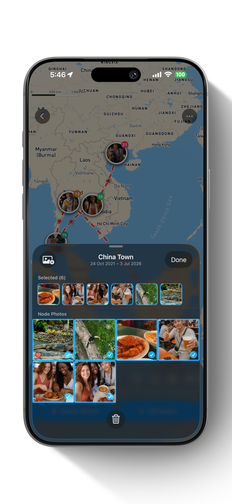
It knows which shots are the good ones.
A tiered scoring engine reads every photo at every stop — what you hearted, what you edited, what you filed in an album — and puts those on screen. The eleven near-identical attempts at the same sunset stay where they are.
- Favourites always make the cut
- Screenshots, duplicates and photos of menus filtered out
- Disagree? Pick your own in a tap and it never argues
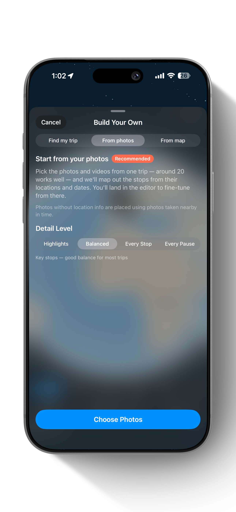
Built for holidays. Excellent at big nights out.
Roamango's job is finding your trips and adventures. But hand it one unforgettable night — or any day worth reliving — and it cuts that too. Tap Custom on the globe, pick the photos, and it builds the roam for you.
- From photos — pick the shots and it maps the stops from where and when you took them
- From map — drop the pins yourself when the night deserves a director's cut
- Find my trip — or just give it dates and let it work the whole thing out
↘ gig, wedding, questionable Tuesday — anything with photos.
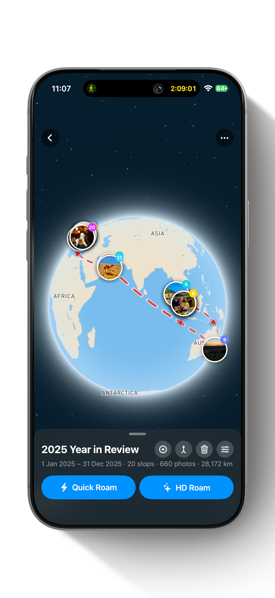
Your whole year, rewound into one roam.
Roamango stitches the year's trips into a single flight around the globe — in order, cut to music, capped with the numbers that made it yours. The wrap-up you'll actually want to post, without assembling anything.
↘ yes, it exports too.
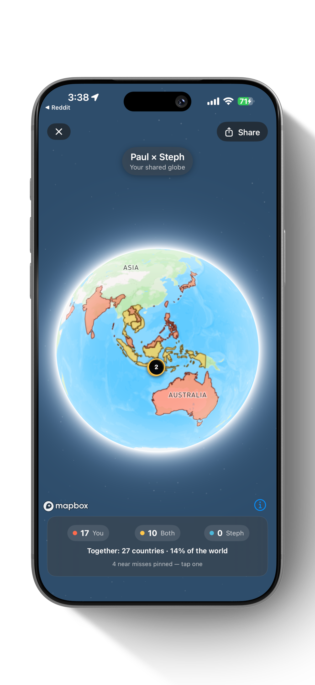
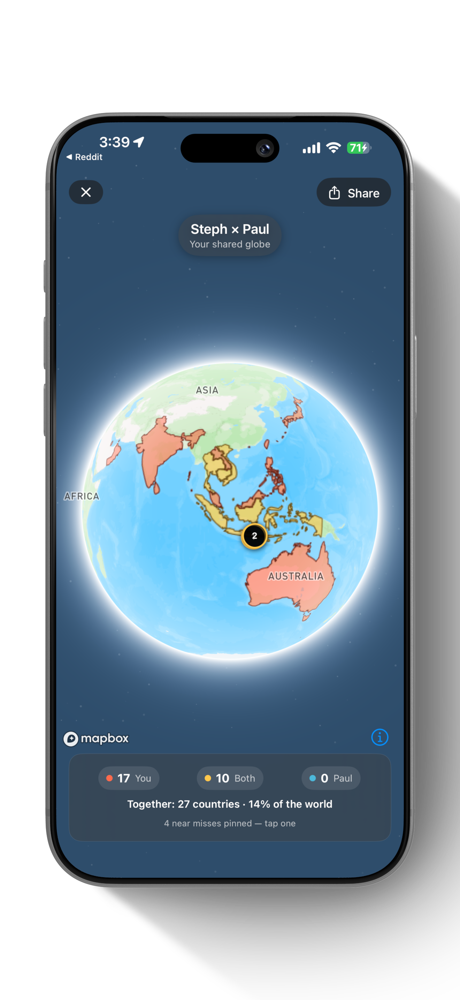
Compare your travels with a friend.
Scan a friend's compare code and your two histories land on one shared globe — your countries in coral, theirs in teal, gold where you've both been. The summary moves straight between the two phones and never touches the internet.
↘ friendly. mostly.
There's no server.
So there's nothing to leak.
Worth stating once and then never again: Roamango has nowhere to send your photos even if it wanted to. It reads your library through Apple's standard permission, does the work on the phone, and writes the film to the phone.
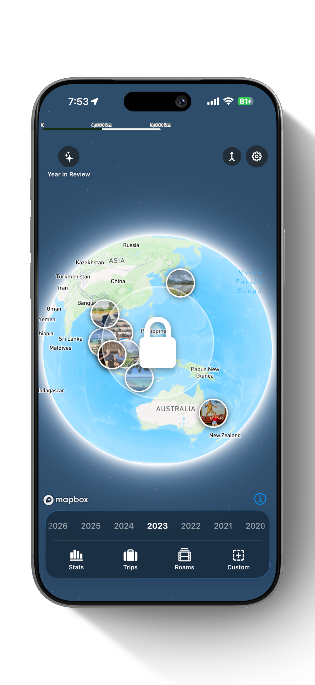
Stuck? Talk to a human.
Questions, a bug, a trip the app got wrong — email us and we'll get you moving again. Include your device model, iOS version and what happened; screenshots help.